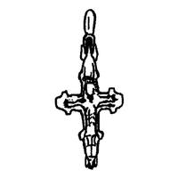
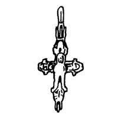

Catalog › CE-0546 · OLI-2
Encolpion bivalv de tip Boris și Gleb, Kasperivți (Рис. 1, 2)
sfârșitul sec. XII – prima jumătate a sec. XIII (1167–1250) · Kasperivți (partea Mistecioc), regiunea Ternopil, raionul Zalișcichi, Ucraina · Muzeul raional comunal de studii locale Zalișcichi (Заліщицький районний комунальний краєзнавчий музей, ЗРККМ), inv. ЗРККМ А 1679
double-sided reliquary cross (enkolpion), bronz; sfârșitul c. XII – prima jumătate a sec. XIII (1167–1250); found at Kasperivți (partea Mistecioc), regiunea Ternopil, raionul Zalișcichi, Ucraina; kept at Muzeul raional comunal de studii locale Zalișcichi (Заліщицький районний комунальний краєзнавчий музей, ЗРККМ).




Identificare
- Categorie
- Encolpion bivalv (relicvar)
- Material
- Bronz
- Tehnică
- Turnare în relief
- Dimensiuni
- Î 32 × L 23 mm
Iconografie
- Descriere avers
- Pe fața din față, Răstignirea în relief.
- Revers
- Sf. Boris și Gleb
- Descriere revers
- Figura în picioare a unui sfânt; pe brațul stâng al valvei inferioare se văd literele «БО».
- Inscripții
- БО
Datare și atribuire
- Datare
- sfârșitul sec. XII – prima jumătate a sec. XIII (1167–1250)
- Tipologie
- Tip Boris și Gleb
Descoperire
- Localitate
- Kasperivți (partea Mistecioc)
- Regiune
- regiunea Ternopil, raionul Zalișcichi
- Țară
- Ucraina
- Context
- Așezare
- Anul
- 1978
- Coordonate
- 48.6636° N, 25.8429° E
- Precizia locului
- Doar localitatea
Păstrare și referințe
- Colecție
- Muzeul raional comunal de studii locale Zalișcichi (Заліщицький районний комунальний краєзнавчий музей, ЗРККМ)
- Nr. inventar
- ЗРККМ А 1679
- Bibliografie
- В. Олійник, В. Олійник, Знахідки давньоруських енколпіонів на півдні Тернопільщини, în „Матеріали і дослідження з археології Прикарпаття і Волині”, 12, 2008, p. 390–392 [Олійник, Олійник 2008], p. 390, Рис. 1, 2, reprodusă la Рис. 1, 2 (p. 391).
- Figura
- Рис. 1, 2
- Planșe
- Олійник, Олійник 2008, p. 391
- Analogii
- Multe asemenea cruci au fost găsite în nord-estul Rusiei vechi (Корзухина, Пескова 2003, p. 225).
- Observații
- Găsit în iunie 1978 în partea Mistecioc a satului Kasperivți de Fedora Vereșighora. Capete rotunjite. Dimensiuni: 5,2×2,3 cm cu ureche, 3,2×2,3 cm fără ureche (cifrele sunt cele din sursă). Sursa spune că în locurile descoperirii de la Kasperivți și Lisicinîki au fost găsite vârfuri de săgeți de fier, iar crucile de pe Zalișcichi au fost găsite împreună cu fragmente de vase din epoca cnezială. Coordonate: ale localității (aproximative), nu date în sursă.
Citare: Corpus Encolpiorum, CE-0546, Encolpion bivalv de tip Boris și Gleb, Kasperivți (Рис. 1, 2), https://vitaliejosanu1979-ux.github.io/primul-meu-proiect/piese/OLI-2/ (accesat 2026-10-17).